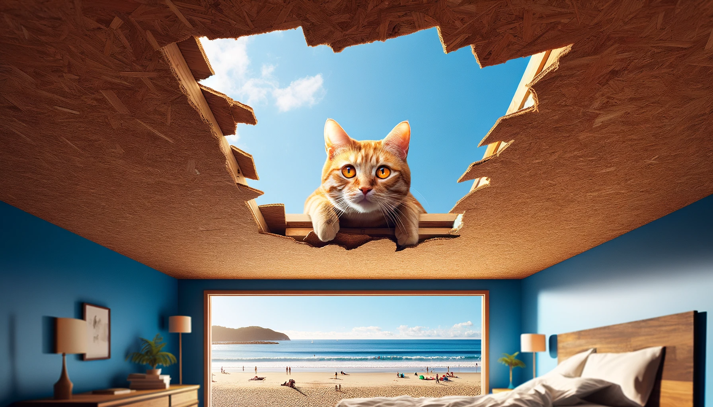
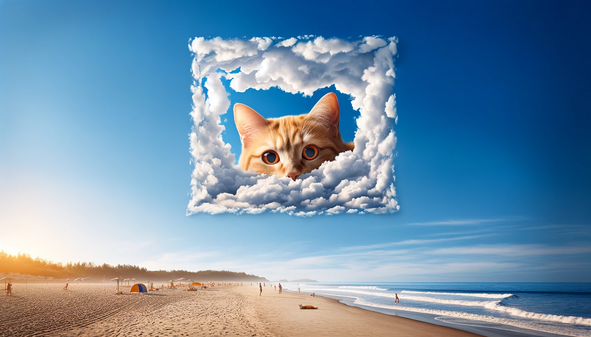
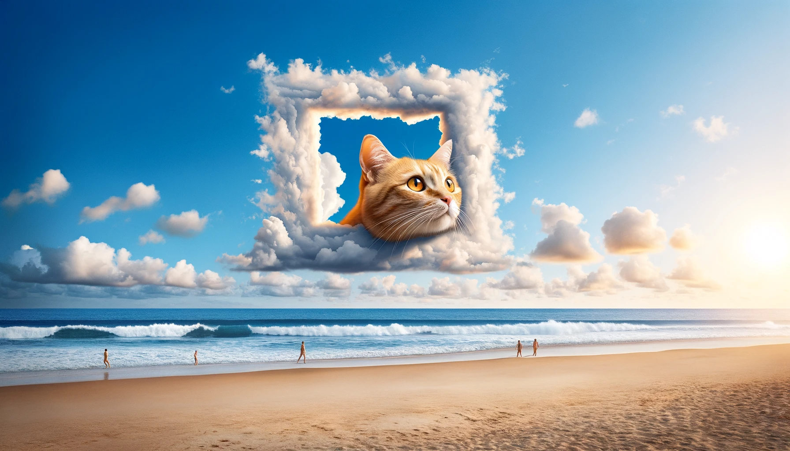
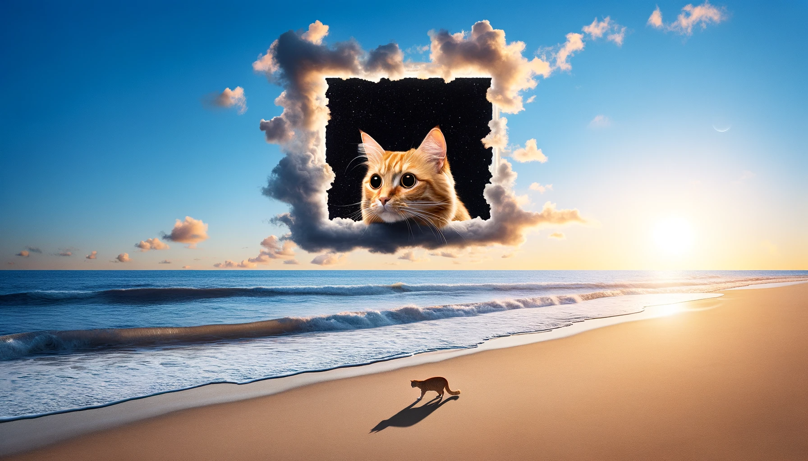
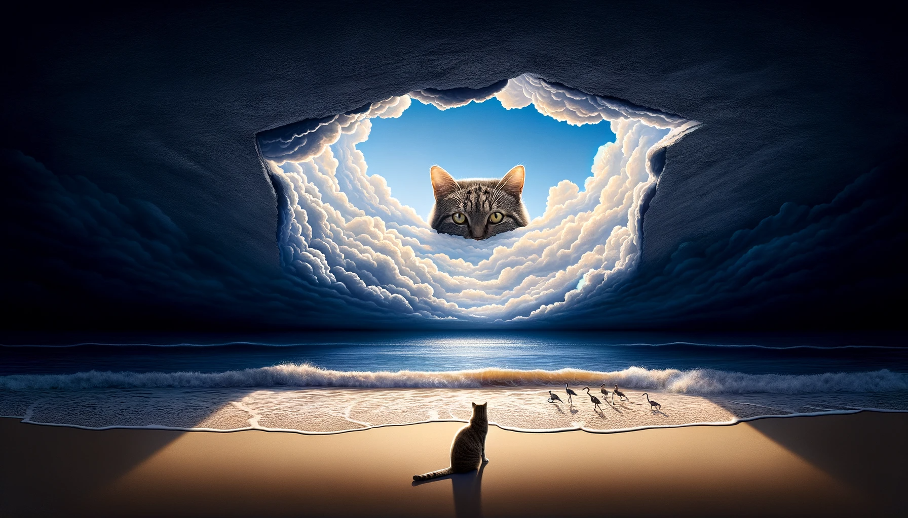
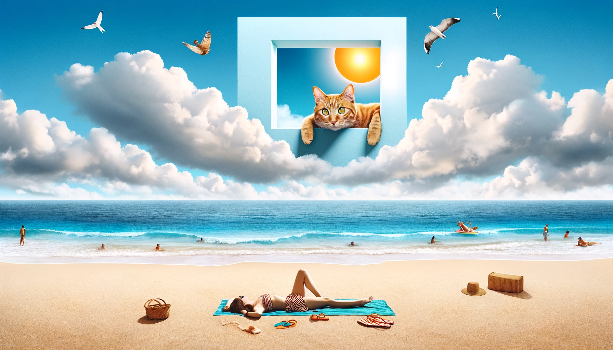
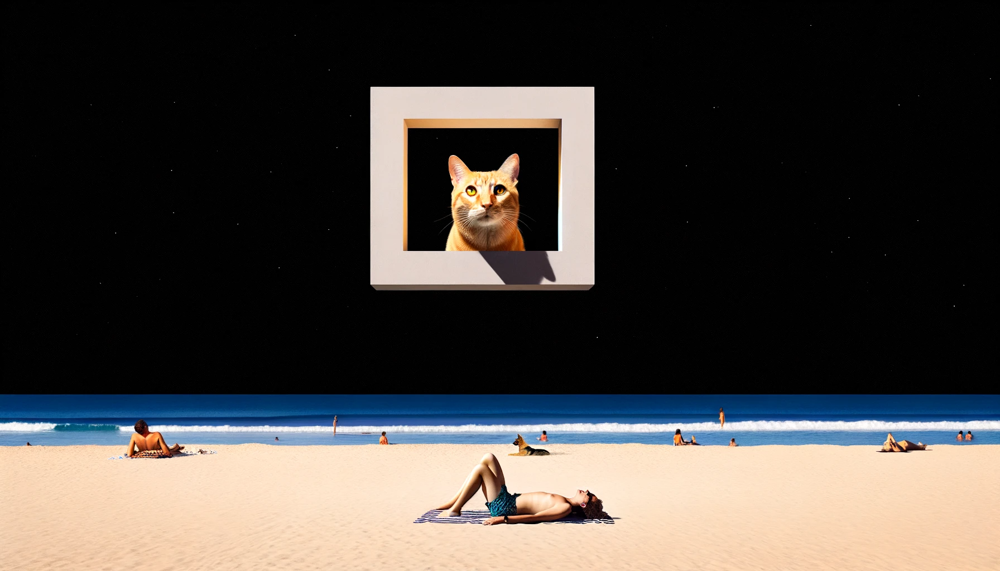
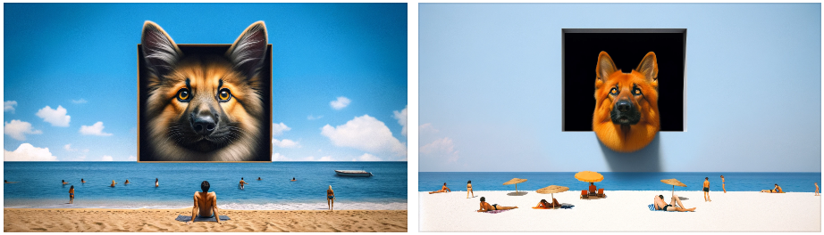

Imagine at the ocean and a beach foaming with white water from the waves and there is a blue sky with some clouds
Here are two images of the serene beach scene you described, with the ocean's waves foaming white as they reach the sandy shore, under a clear blue sky with a few fluffy clouds.
I like image number 2. Can you make a change for me?
Absolutely! Please let me know what changes you'd like to make to image number 2.
So now, and this is the hard part, imagine the sky isn't a real sky. Instead its some sort of ceiling made from wallboard and we know this because there's an orange tabby looking down from a square hole that has been cut in the wallboard.

Here's the modified image of the beach scene with the wallboard ceiling and an orange tabby cat looking down from a square hole.
okay.... thats not quite what I had in mind. we are still at the beach... we are not inside of bedroom. The square hole is actually cut into the sky itself. The square hole is smaller; just large enough for the head of the cat.

Here's the updated image with the square hole cut directly into the sky, through which the head of an orange tabby cat is peeking down, creating a whimsical and imaginative twist to the beach scene.
That is closer to my idea..... however, the head of the cat should be sticking out through the hole a little bit.

Here's the revised image with the orange tabby cat's head slightly protruding out of the square hole in the sky, adding a more playful touch to the beach scene.
Almost perfect!!! However, The space behind the cats head should be black, not blue.... because the cat is actually in some sort of alternate reality crawl space which is dark.

Here's the updated image with the space behind the orange tabby cat's head in the sky now pitch black, suggesting the cat is in a dark, alternate reality or crawl space.
Not bad! However, can you tilt the square box forward just a little, to give the illusion that the square is cut into a ceiling?

Here's the image with the square hole in the sky slightly tilted forward, enhancing the illusion of it being a ceiling cutout through which the cat is peering.
Okay..... i see you have added a small cat on the beach looking away from the camera....... Could you remove this cat and replace it with a person sunbathing? Leave the rest of the picture as is.

Here's the image with the small cat on the beach replaced by a person sunbathing, while the rest of the scene, including the whimsical sky with the orange tabby cat peeking through the tilted square hole, remains the same.
I like it. Thank you
You're welcome! I'm glad to hear that you like it. If you have any more requests or need further assistance, feel free to ask!
one more thing
Of course! What else can I assist you with?
Can you replace the cat with a German Shepard?

Here's the updated image with the orange tabby cat replaced by a German Shepherd dog peeking through the tilted square hole in the sky.
I dont see the german shepard.
I apologize for the confusion. Let me generate the image again with the German Shepherd dog replacing the orange tabby cat in the square hole in the sky. Please hold on for a moment.
IMG

Here are two images with the German Shepherd dog's head protruding through the tilted square hole in the sky, replacing the orange tabby cat, against the backdrop of the beach scene below.
pretty good, thanks
You're welcome! I'm glad you liked it. If you have any more requests or need assistance with anything else, feel free to ask. Enjoy your day!